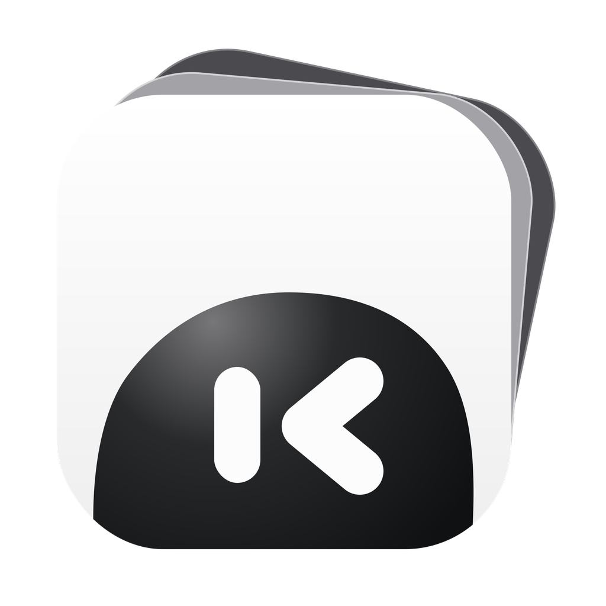
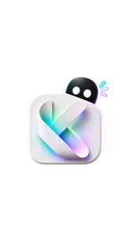
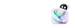

Knorvia Studio
Knorvia Studio
欢迎安装 Knorvia Studio。 接下来选择安装位置，然后开始安装。 点击“下一步”继续。
Welcome to Knorvia Studio. Choose an installation folder, then start the installation. Click Next to continue.
设计评审稿，非原生安装运行截图。沿用 NSIS 页面、位图槽位和系统控件；Windows 字体、DPI 与最终状态由 native 集成确认。

Knorvia Studio
欢迎安装 Knorvia Studio。 接下来选择安装位置，然后开始安装。 点击“下一步”继续。
Welcome to Knorvia Studio. Choose an installation folder, then start the installation. Click Next to continue.
MUI welcome · 164×314 侧图。下一页沿用原有安装模式 / 安装目录流程。
正在安装，请稍候。
Installing. Please wait.

正在写入：Knorvia Studio.exe
Extracting: Knorvia Studio.exe
目标目录：…\Programs\Knorvia Studio
正在释放程序文件…
写入：Knorvia Studio.exe
Destination: …\Programs\Knorvia Studio
Extracting program files…
Extracting: Knorvia Studio.exe
MUI instfiles · 150×57 右侧 header。进度 / 文件名为示例；实际数值与按钮状态由 NSIS 拥有，不增加预计时长。
安装完成。 点击“完成”关闭安装向导。 首次使用时，可在模型设置中配置模型服务。
Installation complete. Click Finish to close the installer. On first launch, you can configure a model service in Model settings.
MUI finish · 重用侧图与原有启动复选框。不增加完成动画、账号步骤或新设置。
预览直接使用交付 BMP，所有素材来自本仓库。按钮不运行安装；本页不是安装器源码。没有嵌入字体，Linux 截图使用本机 CJK 回落。